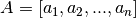

VertexFrame dot_product¶
-
dot_product(self, left_column_names, right_column_names, dot_product_column_name, default_left_values=None, default_right_values=None)¶ [ALPHA] Calculate dot product for each row in current frame.
Parameters: left_column_names : list
Names of columns used to create the left vector (A) for each row. Names should refer to a single column of type vector, or two or more columns of numeric scalars.
right_column_names : list
Names of columns used to create right vector (B) for each row. Names should refer to a single column of type vector, or two or more columns of numeric scalars.
dot_product_column_name : unicode
Name of column used to store the dot product.
default_left_values : list (default=None)
Default values used to substitute null values in left vector. Default is None.
default_right_values : list (default=None)
Default values used to substitute null values in right vector. Default is None.
Calculate the dot product for each row in a frame using values from two equal-length sequences of columns.
Dot product is computed by the following formula:
The dot product of two vectors  and
![B =[b_1, b_2, ..., b_n]](../../../R_images/math/7b5f16ab76361e542173d429f7207e0179435cd1.png) is
is  .
The dot product for each row is stored in a new column in the existing frame.
.
The dot product for each row is stored in a new column in the existing frame.Notes
If default_left_values or default_right_values are not specified, any null values will be replaced by zeros.
Examples
Calculate the dot product for a sequence of columns in Frame object my_frame:
>>> my_frame.inspect() [#] col_0 col_1 col_2 col_3 =============================== [0] 1 0.2 -2 5 [1] 2 0.4 -1 6 [2] 3 0.6 0 7 [3] 4 0.8 1 8
Modify the frame by computing the dot product for a sequence of columns:
>>> my_frame.dot_product(['col_0','col_1'], ['col_2', 'col_3'], 'dot_product') [===Job Progress===] >>> my_frame.inspect() [#] col_0 col_1 col_2 col_3 dot_product ============================================ [0] 1 0.2 -2 5 -1.0 [1] 2 0.4 -1 6 0.4 [2] 3 0.6 0 7 4.2 [3] 4 0.8 1 8 10.4
Calculate the dot product for columns of vectors in Frame object my_frame: